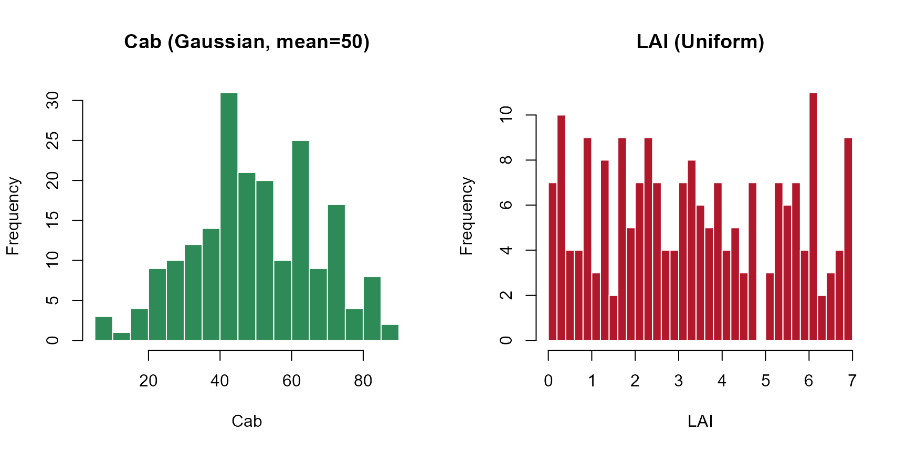
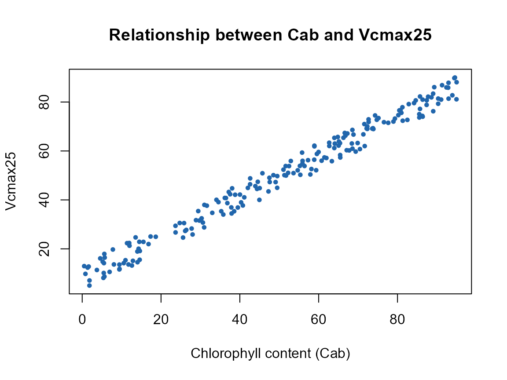

05. Building SCOPE LUTs
t05-building-scope-luts.RmdgetLUT.SCOPE() builds a full SCOPE LUT the same way
ToolsRTM::getLUT() builds a PROSAIL one – sample every
parameter’s own range from a ranges table
(inputs_SCOPE.csv, Tutorial 02), respecting each column’s
own Distribution
(Uniform/Gaussian/Fixed).
1. A default LUT
path_input <- system.file("input", package = "SCOPEinR")
inputLUT <- read.table(file.path(path_input, "inputs_SCOPE.csv"), header = TRUE, sep = ",")
n_samples <- 200
LUT <- getLUT.SCOPE(inputLUT = inputLUT, nLUT = n_samples, setseed = 1)
dim(LUT)
#> [1] 200 76
op <- par(mfrow = c(1, 2))
hist(LUT$Cab, breaks = 25, col = "#2E8B57", border = "white",
main = "Cab (Gaussian, mean=50)", xlab = "Cab")
hist(LUT$LAI, breaks = 25, col = "#B2182B", border = "white",
main = "LAI (Uniform)", xlab = "LAI")
par(op)2. What’s in a SCOPE LUT row that isn’t in a PROSAIL one
meteo_cols <- c("Ta", "Rin", "Rli", "p", "u", "RH")
extra_cols <- c("Vcmax25", meteo_cols)
LUT[1, extra_cols]
#> Vcmax25 Ta Rin Rli p u RH
#> 1 214.6308 20 600 300 970 2 0.8540528Vcmax25 (photosynthetic capacity) has no counterpart in
a plain PROSAIL LUT at all – it drives Actot (Tutorial 01)
but not reflectance directly (Tutorial 07 confirms this precisely). The
meteorology columns (Ta, Rin,
Rli, p, u, RH) are
held "Fixed" by default (Tutorial 02) – they set the
boundary conditions the energy balance solves against, and matter for
Tcave/fluxes even though they carry no optical signal
either.
3. Updating the LUT: Vcmax25 and a Cab~Vcmax25
correlation
LUT$Vcmax25 <- stats::runif(n_samples, min = 5, max = 90)
n.seed <- round(runif(1, 1, n_samples), 0)
pigments <- ToolsRTM::getCor(n_inputs = 2, setseed = n.seed, distribution = "Uniform",
nLUT = n_samples, rho = 0.99, Varnames = c("Cab", "Vcmax25"),
MinRange = c(0.5, 5), MaxRange = c(95, 90))
LUT$Cab <- pigments$LUT$Cab
LUT$Vcmax25 <- pigments$LUT$Vcmax25
cat("Achieved Cab~Vcmax25 correlation:", round(cor(LUT$Cab, LUT$Vcmax25), 2), "\n")
#> Achieved Cab~Vcmax25 correlation: 0.99
plot(LUT$Cab, LUT$Vcmax25, pch = 19, col = "#2166AC", cex = 0.6,
xlab = "Chlorophyll content (Cab)", ylab = "Vcmax25",
main = "Relationship between Cab and Vcmax25")
This deliberately strong correlation (rho=0.99) matters for Tutorial
09 and the capstone Tutorial 11: real leaves DO correlate nitrogen/Vcmax
with chlorophyll, and this is exactly the correlation real SIF-GPP
remote-sensing proxy studies rely on – getLUT.SCOPE()’s own
default (fully independent sampling) has no such signal for any
inversion method to find, as Tutorial 07’s sensitivity results and the
SCOPE course pipeline’s honest-negative SIF-Vcmax result both show
directly.